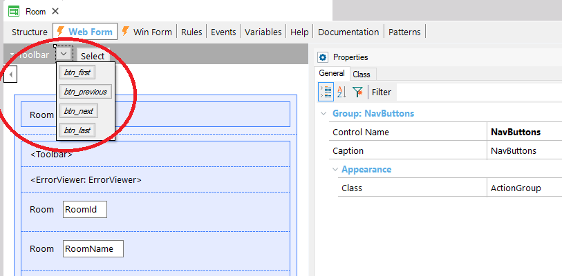
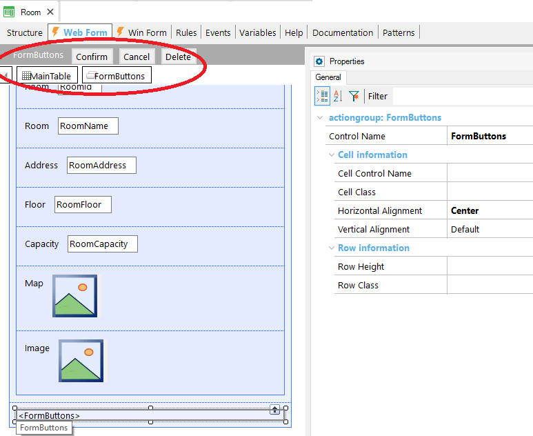
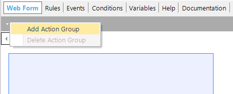
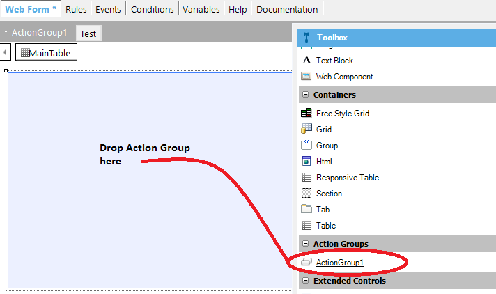
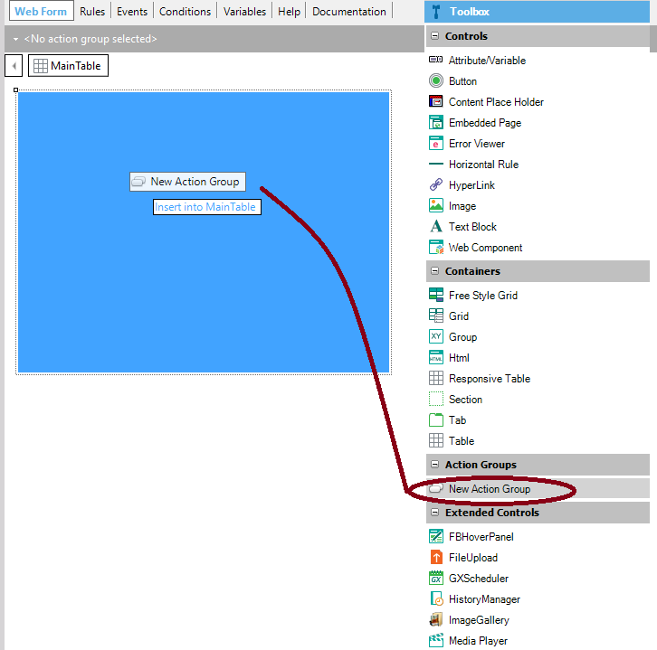
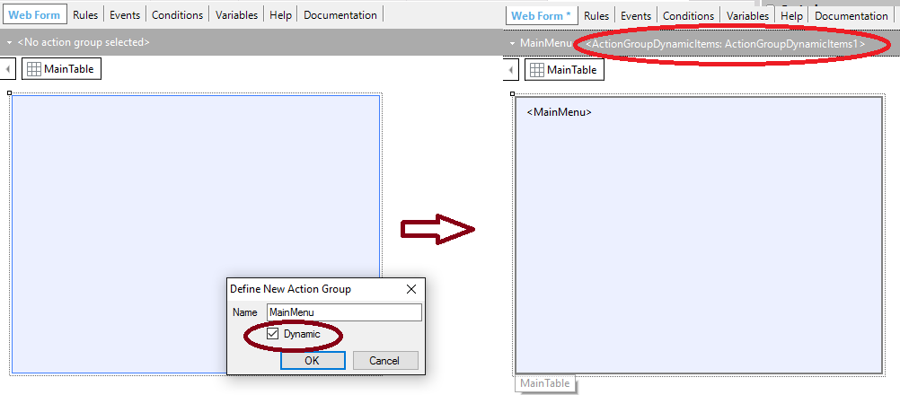
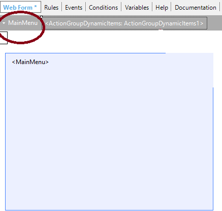
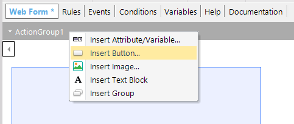
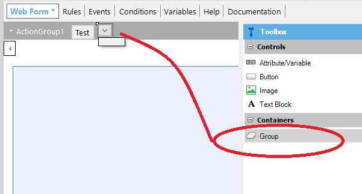
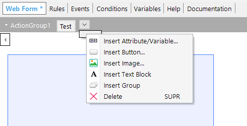

In the web platform, an Action Group is an element of the user interface which is used to group controls (buttons, images, text blocks, and variables), and it helps to easily create a toolbar.
It is supported in abstract layouts and its main purpose is to allow you to insert several controls inside the same cell of a Responsive Table.
This implies that it won't be necessary to adjust offset settings between the different controls because the whole group is displayed as a single element.
Another use of an action group is to create a menu.
When to use an action group:
To insert several controls inside the same cell and to avoid the effort of adjusting the offset settings between the controls. This is a Toolbar action group.
To create a responsive menu. This is a menu action group.
To render an Action Group as a Toolbar, you have to set the Action Group Control Type property = Toolbar.
In all devices, it will be displayed in only one row.
For example, the navigation buttons and the Select button of a Web Transaction are inside an Action Group with its Control Type property = Toolbar:

Picture #1
Moreover, the Confirm, Cancel, and Delete buttons are inside another Action Group with its Control Type property = Toolbar:

Picture #2
To render an Action Group as a Menu, you have to set the Action Group Control Type property = Menu. See Web Navigation Bar for details.
Both Toolbar and Menu Action Groups can have a dynamic component. See How to create a dynamic menu for WEB applications
There are two ways to create an Action Group, which we explain below:
Alternative #1. Click on the arrow in the top left corner of the layout and select "Add Action Group", as shown below:

Picture #3
Then in the Toolbox of the responsive table, the Action Group will be available to be dragged to the form:

Picture #4
Alternative #2. Drag the "New Action Group" item from the toolbox to the web form.

Picture #5
Then you can set the Action Group name and if it's dynamic or not.

Picture #6
The Action Group will also appear in the Toolbar.

Picture #7
Afterward, regardless of the way you added the control to the form, new controls can be added to the group by right-clicking at the top of the layout and by selecting the insert <control>.

Picture #8
The controls of the Action Group have the same properties as any control inside the responsive table.
A subgroup of controls can be added inside an action group.
Dragging a group from the Toolbox to the Toolbar will result in an arrow where other controls can be dropped.

Picture #9
Then the controls can be added or dragged to the group:

Picture #10
Note: Another way to add a group to the Action Group is by rick-clicking and by selecting "Insert Group".
As an example, Web Transactions default web forms have paging buttons defined in a subgroup (see Picture #1)
Note: The subgroups are generated as BootStrap button groups.
| Control Name |
Control Name of the action group. |
| Caption |
The caption to be shown. It only applies when the Control Type = Menu. It's displayed when there is no Image(*) configured for the Menu.
If an image is configured, the Caption is used as an alternate text of it.
The Caption style settings can be configured using the Caption Class property of the ActionGroup Theme Class.
|
| Class |
Theme Class associated with the action group control. |
| Control Type |
{Toolbar, Menu}. See Web Navigation Bar |
| Image(*) |
It only applies when the Control Type = Menu. It's an image (logo) to be shown at the left-hand side of the menu. It can be configured using the Image Class property of the ActionGroup Theme Class. |
| Position |
Only for control type = Menu. The possible values are: {Default, Fixed top, Fixed bottom} |
|